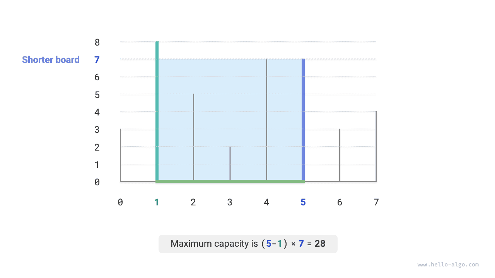
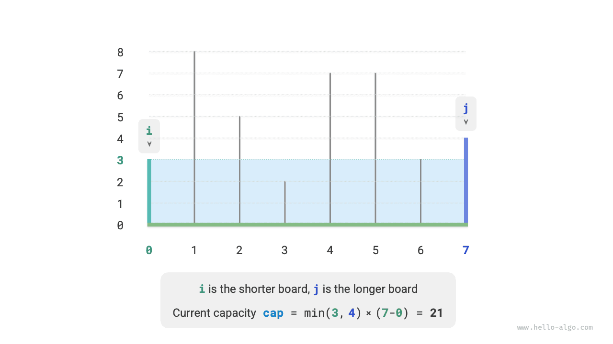
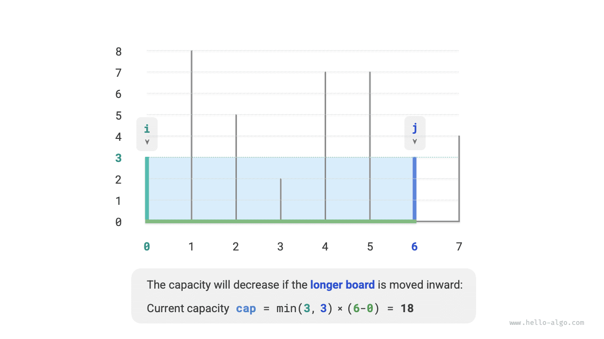
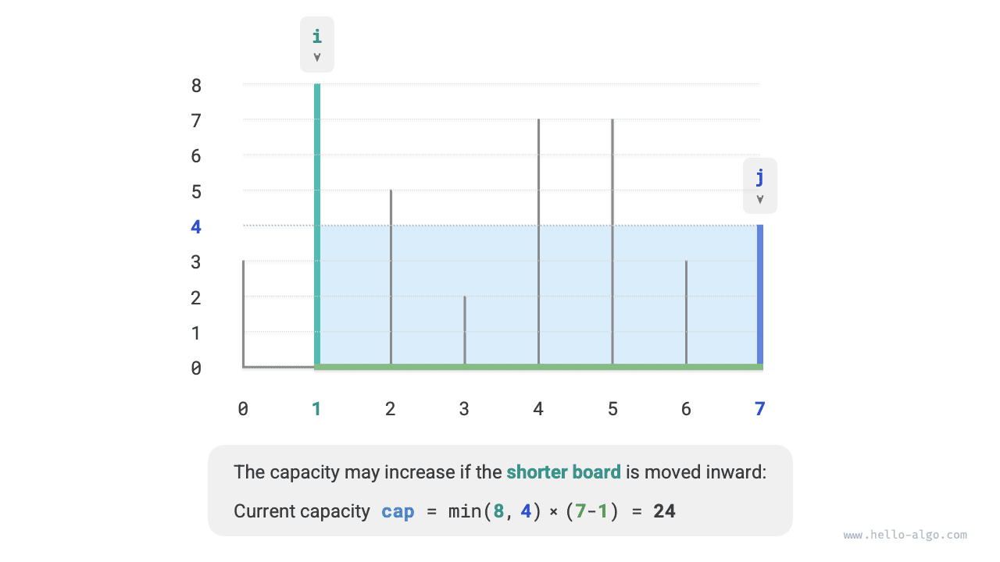
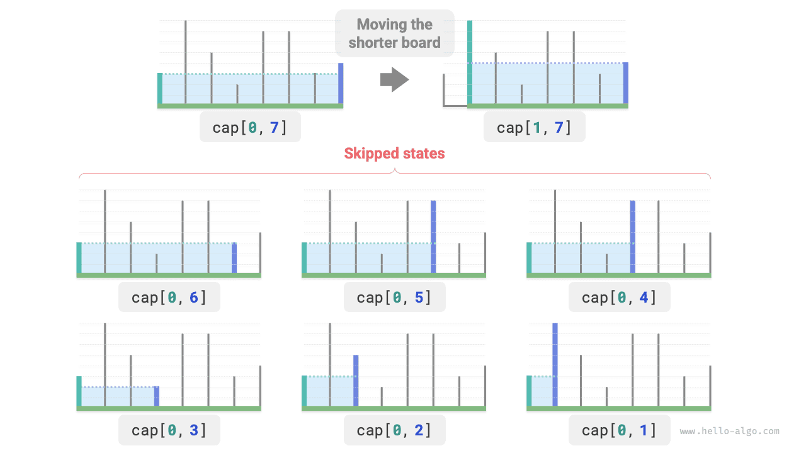

الخوارزميات الجشعة
مسألة السعة القصوى
بمعطى مصفوفة $ht$، يمثّل كل عنصر فيها ارتفاع حاجز عمودي. ويمكن لأي حاجزين في المصفوفة، مع المساحة بينهما، أن يشكّلا حاوية.
تساوي سعة الحاوية حاصل ضرب ارتفاعها في عرضها (أي مساحتها)، حيث يتحدد الارتفاع بالحاجز الأقصر، ويكون العرض الفرق بين فهرسي الحاجزين في المصفوفة.
اختر حاجزين في المصفوفة بحيث تصبح سعة الحاوية الناتجة أقصى ما يمكن، وأعِد تلك السعة القصوى. ويوضح الشكل أدناه مثالاً على ذلك.

تتكوّن الحاوية من أي حاجزين، لذا فإن حالة هذه المسألة هي فهرسا الحاجزين، ويرمز إليهما بـ$[i, j]$.
وفقاً لنص المسألة، تساوي السعة الارتفاع مضروباً في العرض، حيث يتحدد الارتفاع بالحاجز الأقصر، ويكون العرض الفرق بين فهرسي الحاجزين في المصفوفة. ولتكن السعة $cap[i, j]$؛ فنحصل على الصيغة التالية:
$$ cap[i, j] = \min(ht[i], ht[j]) \times (j - i) $$
وليكن طول المصفوفة $n$. عندئذٍ يكون عدد طرق اختيار حاجزين (أي العدد الإجمالي للحالات) $C_n^2 = \frac{n(n - 1)}{2}$. والطريقة الأكثر مباشرة هي استنفاد جميع الحالات تعدداً للعثور على السعة القصوى، ويكون التعقيد الزمني لها $O(n^2)$.
تحديد الاستراتيجية الجشعة
لهذه المسألة حل أكثر كفاءة. وكما هو موضح في الشكل أدناه، خذ حالة $[i, j]$ يكون فيها $i < j$ و$ht[i] < ht[j]$. وفي هذه الحالة يكون $i$ هو الحاجز الأقصر و$j$ هو الحاجز الأطول.

وكما هو موضح في الشكل أدناه، إذا حرّكنا الآن الحاجز الأطول $j$ إلى الداخل نحو الحاجز الأقصر $i$، فستنقص السعة حتماً.
ويعود السبب إلى أنه بعد تحريك الحاجز الأطول $j$، ينقص العرض $j-i$ حتماً. وبما أن الارتفاع يتحدد بالحاجز الأقصر، فلا يمكن للارتفاع إلا أن يبقى كما هو ($i$ يظل الحاجز الأقصر) أو أن ينقص ($j$ يصبح الحاجز الأقصر بعد التحريك).

وعلى العكس، لا يمكن للسعة أن تزداد إلا بتحريك الحاجز الأقصر $i$ إلى الداخل. فرغم أن العرض سينقص حتماً، فإن الارتفاع قد يزداد (قد يكون الحاجز المنقول عند $i$ أطول). فمثلاً في الشكل أدناه، تزداد المساحة بعد تحريك الحاجز الأقصر.

ومن هذا نستنتج الاستراتيجية الجشعة لهذه المسألة: هيّئ مؤشرين عند الطرفين، وحرّك في كل جولة المؤشر المقابل للحاجز الأقصر إلى الداخل حتى يلتقي المؤشران.
يوضح الشكل أدناه عملية تنفيذ الاستراتيجية الجشعة.
- في الحالة الابتدائية، يكون المؤشران $i$ و$j$ عند طرفي المصفوفة.
- احسب سعة الحالة الحالية $cap[i, j]$، وحدّث السعة القصوى.
- قارن ارتفاعي الحاجزين $i$ و$j$، وحرّك المؤشر المقابل للحاجز الأقصر إلى الداخل موضعاً واحداً.
- كرّر الخطوتين
2.و3.حتى يلتقي $i$ و$j$.
تنفيذ الشيفرة
تعمل الشيفرة $n$ جولة على الأكثر، لذا فإن التعقيد الزمني هو $O(n)$.
لا تستخدم المتغيرات $i$ و$j$ و$res$ سوى مقدار ثابت من المساحة الإضافية، لذا فإن التعقيد المكاني هو $O(1)$.
Go
/* السعة القصوى: الخوارزمية الجشعة */
func maxCapacity(ht []int) int {
// هيّئ i وj عند طرفي المصفوفة
i, j := 0, len(ht)-1
// السعة القصوى الابتدائية هي 0
res := 0
// كرّر الاختيار الجشع حتى يلتقي الحاجزان
for i < j {
// حدّث السعة القصوى
capacity := int(math.Min(float64(ht[i]), float64(ht[j]))) * (j - i)
res = int(math.Max(float64(res), float64(capacity)))
// حرّك الحاجز الأقصر إلى الداخل
if ht[i] < ht[j] {
i++
} else {
j--
}
}
return res
}
TypeScript
/* السعة القصوى: الخوارزمية الجشعة */
function maxCapacity(ht: number[]): number {
// هيّئ i وj عند طرفي المصفوفة
let i = 0,
j = ht.length - 1;
// السعة القصوى الابتدائية هي 0
let res = 0;
// كرّر الاختيار الجشع حتى يلتقي الحاجزان
while (i < j) {
// حدّث السعة القصوى
const cap: number = Math.min(ht[i], ht[j]) * (j - i);
res = Math.max(res, cap);
// حرّك الحاجز الأقصر إلى الداخل
if (ht[i] < ht[j]) {
i += 1;
} else {
j -= 1;
}
}
return res;
}
برهان الصحة
سبب كون الجشع أسرع من التعداد الشامل هو أن كل جولة اختيار جشع «تتخطى» بعض الحالات.
فمثلاً، في الحالة $cap[i, j]$، افترض أن $i$ هو الحاجز الأقصر و$j$ هو الحاجز الأطول. فإذا حرّكنا الحاجز الأقصر $i$ جشعاً إلى الداخل موضعاً واحداً، ستُتخطى الحالات الموضحة في الشكل أدناه. وهذا يعني أنه لم يعد في الإمكان فحص سعاتها لاحقاً.
$$ cap[i, i+1], cap[i, i+2], \dots, cap[i, j-2], cap[i, j-1] $$

وبنظرة أدق، نجد أن هذه الحالات المتخطّاة هي بالضبط الحالات الناتجة عن تحريك الحاجز الأطول $j$ إلى الداخل. وقد أثبتنا سابقاً أن تحريك الحاجز الأطول إلى الداخل ينقص السعة حتماً. لذلك لا يمكن أن تكون أي من الحالات المتخطّاة هي الحل الأمثل، فتخطيها لا يجعلنا نفوّت الحل الأمثل.
يبين التحليل أعلاه أن تحريك الحاجز الأقصر عملية «آمنة»، وأن الاستراتيجية الجشعة فعّالة.